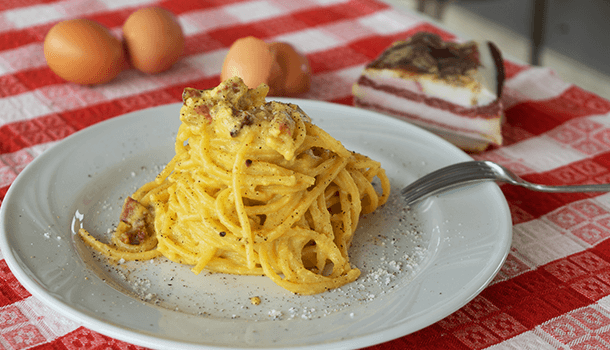

Carbonara

SPAGHETTI CARBONARA RECIPE
Spaghetti carbonara recipe, original and approved by Romans! Before we start, the number one rule is simple ,REAL SPAGHETTI CARBONARA RECIPE IS MADE WITH EGGS, NOT CREAM!
Combine fresh eggs, with crispy guanciale, salty pecorino cheese and pepper to create the perfect, classic Roman pasta dish, Carbonara. In this video recipe, I tested out my traditional version with some locals from Rome and they loved it! Make this classic the right way and I promise, your tastebuds will thank you.
Ingredients
- 5L Water (21.134 cups)
- Pinch rock salt
- 300g/10 oz Spaghetti (or Spaghettoni/Rigatoni/Paccheri)
- 150g/5.3 oz Guanciale (Pig Cheek or Pancetta)
- 200g (2 cups) Pecorino cheese
- 4 eggs
- Pepper
Steps
- Spaghetti carbonara takes just a short time to make so first up, boil the water to cook your pasta in a large pot.
- Cook the pasta according to the packet instructions when it comes to time, making sure the pasta is al dente.
- Cut the skin off the guanciale (making sure to leave the peppery/seasoned crust), then slice it into thin strips.
- Put the large fry pan on the stove at a low to medium heat. For the spaghetti carbonara recipe to be just right, add the guanciale into the pan, let it cook very slowly and it will create its own delicious oil.
- Let the guanciale simmer and crisp up very gently.
- Get your mixing bowl and add 4 eggs, then whisk them really well.
- Next, add the pecorino cheese to make this spaghetti carbonara recipe, and lots of pepper before mixing it together really well. This will create a scrumptious cream for you to add to your pasta.
- Once the pasta has boiled to your preferred taste, using a set of tongs, take out the pasta from the boiling water and add it straight to the pan, making sure small drops of the water mix into the pan too.
- Turn off the cook top, so the pasta and guanciale stop cooking.
- Next, using the ladle, get a full scoop of pasta water out of the pot and add it to the egg and cheese cream, then mix through well using a fork.